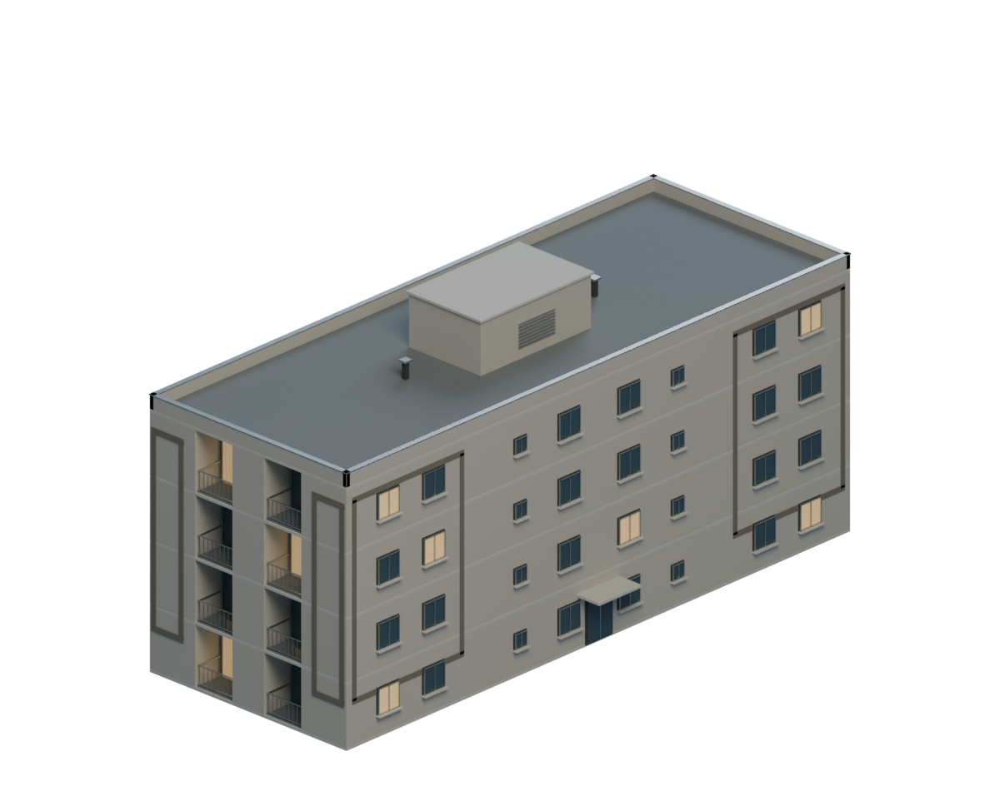
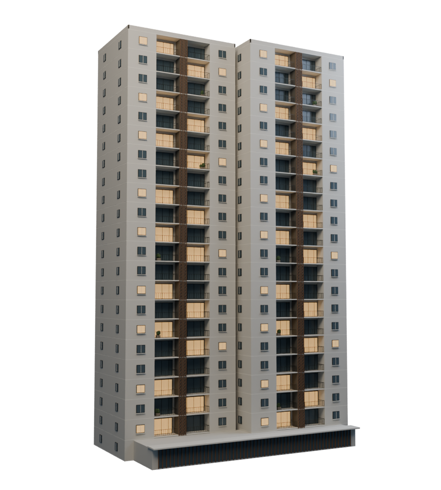

COLEÇÃO DE MAQUETES · 1.5
Do prédio ao apartamento.
Explore a fachada, veja o conjunto e entre na planta mobiliada. Arraste para girar, aproxime para observar os detalhes ou amplie a visualização.

Monte dos Cedros
Duas torres de 15 pavimentos, com luz calculada na fachada, planta mobiliada e visita 3D. Unidade no 8º andar.
Explorar Monte dos Cedros →
Modelo base sem a iluminação da visita: Blender · GLB

Monte das Colinas
Bloco de quatro pavimentos, fachadas claras e molduras cinza. A vista do conjunto reúne quatro blocos representativos. Unidade no 3º andar.
Explorar Monte das Colinas →

Wish Castanheiras
Duas torres de 22 pavimentos, sacadas profundas, treliças vazadas e janelas iluminadas. Unidade no 11º andar.
Explorar Wish Castanheiras →
Representações ilustrativas baseadas nos cadastros e nas imagens oficiais da MRV. Dimensões, detalhes não visíveis e implantação são aproximados. O conjunto do Colinas não reproduz a implantação completa do empreendimento.